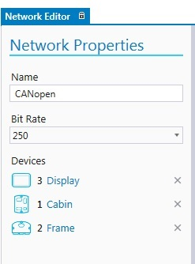
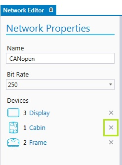

This chapter describes adding, editing and deleting functions for networks. Also, connecting and disconnecting devices are described. Once the network is added, it can be configured and devices can be connected to it.
The network definition is needed if the system includes several devices. To add a network,
1. Click Add Network icon  in Network Editor
in Network Editor
A network between two devices is easily done by dragging a CAN channel from device to another device's CAN icon:
Select a CAN channel from the device and drag >> Drag the cursor on another device's CAN channel >> A network is created

2. Adding devices to a network can also be done by dragging a CAN channel to the network
Select a CAN channel from the device and drag >> Drag the cursor on a network >> The connection is added

3. The network icon appears on the Network Editor. Select it by clicking.
4. Set the Network Properties on the left side of the window.

The Network Properties are described in the following table:
|
Property |
Description |
|
Name |
Name of the network. By default, MultiTool Creator names the networks, for example, to Network1 and Network2. However, it is recommended to update the default name into a more descriptive and unique name.
|
|
Bit Rate |
Select a Bit Rate for the network. The default bit rate is 250 kbit/s. Setting the network bit rate here disables the bit rate setting on the device's CAN tab. See also Defining CAN and CANopen.
|
|
Devices |
This list shows the devices that are connected to the selected network.
|
To disconnect devices from a network, select the network and click the device's delete icon in the Network Properties on the left side of the window.

To change any of the network properties, select the network and make the needed changes in the Network Properties on the left side of the window.
To delete the network,
Right-click on the network and select Remove from Project or
Click on the network and select Delete icon or press Delete from keyboard
A dialog opens. Select Yes to confirm deleting.
Epec Oy reserves all rights for improvements without prior notice.
Source file 6_7_Edit_Networks.htm
Last updated 25-Jun-2025